🌻 Présentation
Bienvenue dans SoisFier. SoisFier aide ta famille à installer les routines du quotidien : se brosser les dents, préparer son cartable, se coucher à l'heure. Ton enfant coche ce qu'il a fait, un adulte valide, et ses efforts deviennent visibles : des étoiles, une fleur qui pousse, des récompenses qu'il attend avec impatience.
Pourquoi ça marche
- Ton enfant voit ses progrès : chaque bonne journée fait grandir sa fleur.
- Il apprend à patienter et à épargner : ses étoiles s'échangent contre des récompenses, petites ou grandes.
- Les adultes parlent d'une seule voix : parents, grands-parents ou nounou suivent et valident les mêmes routines.
Les principes
- Un adulte valide. Une étoile ne compte qu'une fois validée. Par défaut, ce que l'enfant coche est validé à minuit s'il n'a pas été refusé (partie 3).
- Pas besoin d'être parfait. Une bonne journée, c'est au moins 75 % des étoiles du jour.
- Une fleur par quinzaine, plus belle selon le nombre de bonnes journées. Les fleurs forment un parterre chaque saison et un jardin chaque année scolaire (partie 4).
- Des récompenses à sa mesure. Leur prix suit le rythme de chaque enfant (partie 2c).
- Les imprévus ne pénalisent pas. Vacances ou maladie : on met en pause, ces jours sont neutres (partie 3).
- Les malus restent rares. Réservés aux parents, 3 étoiles au plus, sans effet sur la fleur ni sur les badges (partie 2c).
- Le téléphone de l'enfant n'a pas besoin de compte. Un code donné par un parent suffit (partie 2d).
Pour démarrer, suis les parties 1, 2a et 2b dans l'ordre. Les autres se lisent au besoin. Touche une capture pour l'agrandir.
1 Installation et compte
Cette partie installe SoisFier sur un téléphone Android et crée le compte d'un parent, en 10 minutes environ.
Avant de commencer
- Un téléphone Android avec Chrome.
- Une adresse e-mail à laquelle tu as accès depuis ce téléphone.
- L'adresse de l'application : https://pyramid85cl209.github.io/SoisFier2/
- Pour rejoindre une famille existante : le code d'invitation à 6 caractères donné par un parent.
L'écran d'accueil
L'écran d'accueil regroupe tout ce qu'il faut pour démarrer : se connecter, créer un compte, connecter le téléphone d'un enfant ou installer l'application.
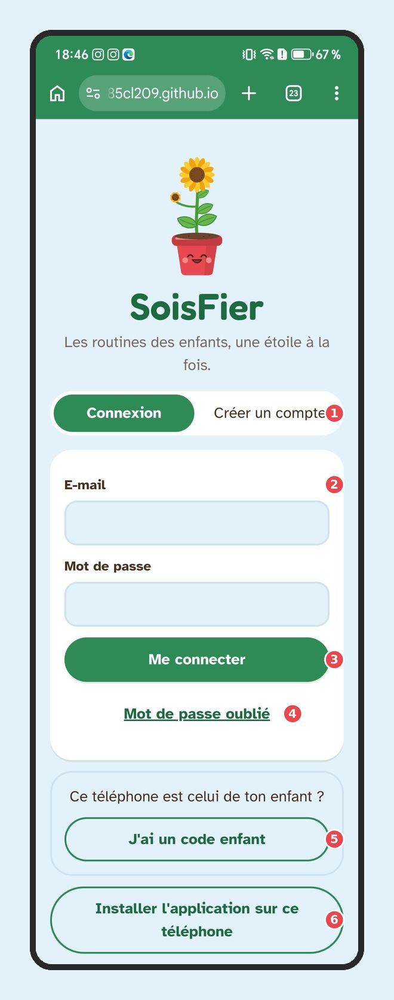
- Connexion / Créer un compte : bascule entre les deux formulaires.
- E-mail et mot de passe : les identifiants du parent.
- Me connecter : ouvre l'espace parent.
- Mot de passe oublié : envoie un lien de réinitialisation à l'adresse saisie.
- J'ai un code enfant : uniquement sur le téléphone de l'enfant (voir l'étape 4).
- Installer l'application sur ce téléphone : ajoute SoisFier à l'écran d'accueil du téléphone.
Étape 1 : installer l'application
Une fois installée, SoisFier s'ouvre comme une application, sans barre d'adresse.
- Ouvre https://pyramid85cl209.github.io/SoisFier2/ dans Chrome.
- En bas de l'écran d'accueil, touche Installer l'application sur ce téléphone (6). Si le bouton n'apparaît pas : menu ⋮ de Chrome, puis Ajouter à l'écran d'accueil.
- Dans la fenêtre qui s'ouvre, touche Installer.
- L'icône SoisFier apparaît sur l'écran d'accueil du téléphone. Ouvre-la : c'est elle qu'il faut utiliser ensuite.
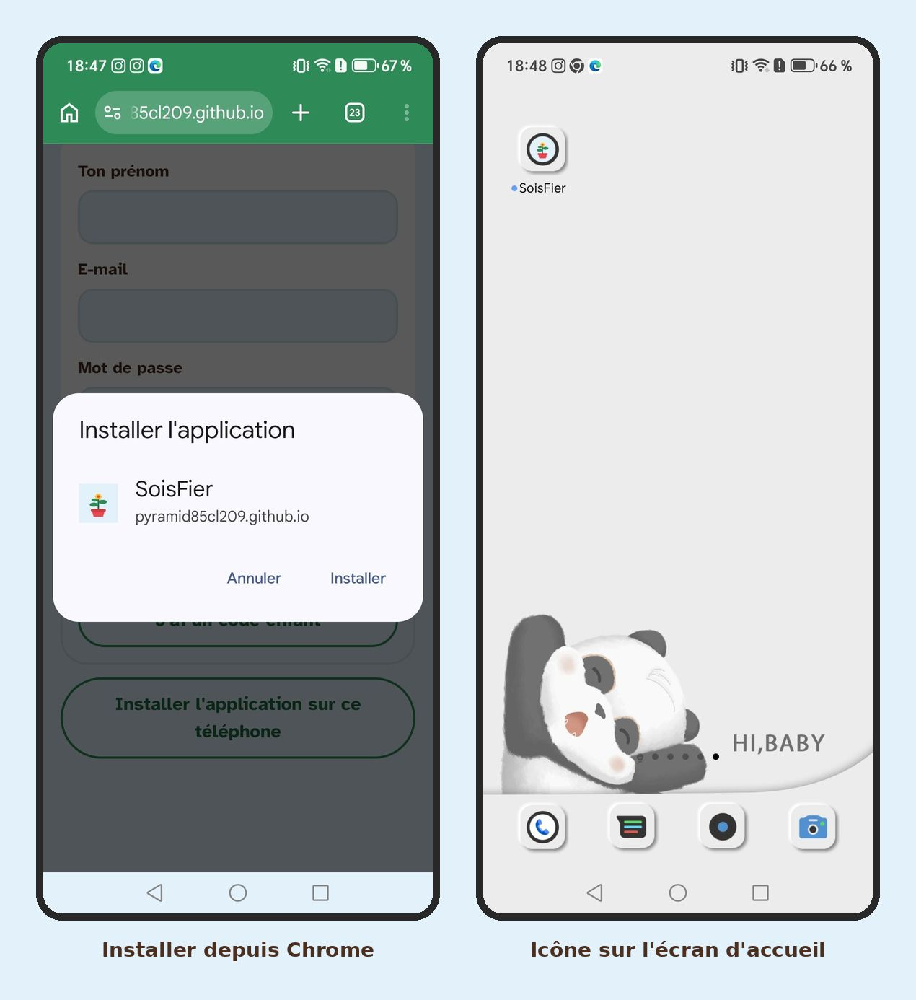
Étape 2 : créer son compte
Chaque adulte a son propre compte, avec son e-mail. Un compte se crée une seule fois.
- Touche l'onglet Créer un compte (1).
- Saisis ton prénom (2), ton e-mail (3) et un mot de passe d'au moins 6 caractères (4).
- Touche Créer mon compte (5). Le message « Vérifie ta boîte mail » s'affiche : touche Compris.
- Ouvre l'e-mail « Confirm your email address » envoyé par Supabase Auth (il est en anglais) et touche le lien Confirm email address.
- Reviens dans SoisFier, onglet Connexion, et connecte-toi avec ton e-mail et ton mot de passe.
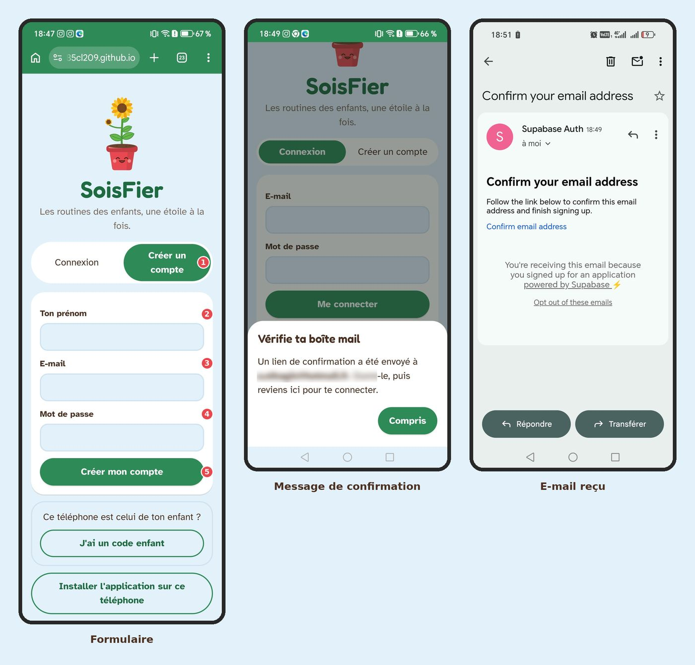
Le lien de confirmation peut ouvrir une page dans le navigateur au lieu de l'application. Ce n'est pas grave : le compte est confirmé, il suffit de revenir dans l'application pour se connecter.
Étape 3 : créer ou rejoindre sa famille
Après la première connexion, l'écran « Bienvenue » demande de créer une famille ou d'en rejoindre une. Un seul parent crée la famille ; les autres membres la rejoignent avec un code.
Premier parent : créer la famille
- Saisis le nom de la famille (1), par exemple « El Hagin ». Le champ affiche « Nom » tant qu'il est vide.
- Dans Je suis (2), choisis ton lien avec les enfants : Papa, Maman, Papy, Mamie, Tonton, Tata, Parrain, Marraine ou Nounou.
- Touche Créer (3).
Autres membres : rejoindre la famille
- Demande un code d'invitation à un parent. Il le génère dans Famille > Inviter un membre, en choisissant ton lien et tes droits (parent ou proche). Le code est valable 48 heures.
- Saisis le code d'invitation à 6 caractères (4) et touche Rejoindre (5).
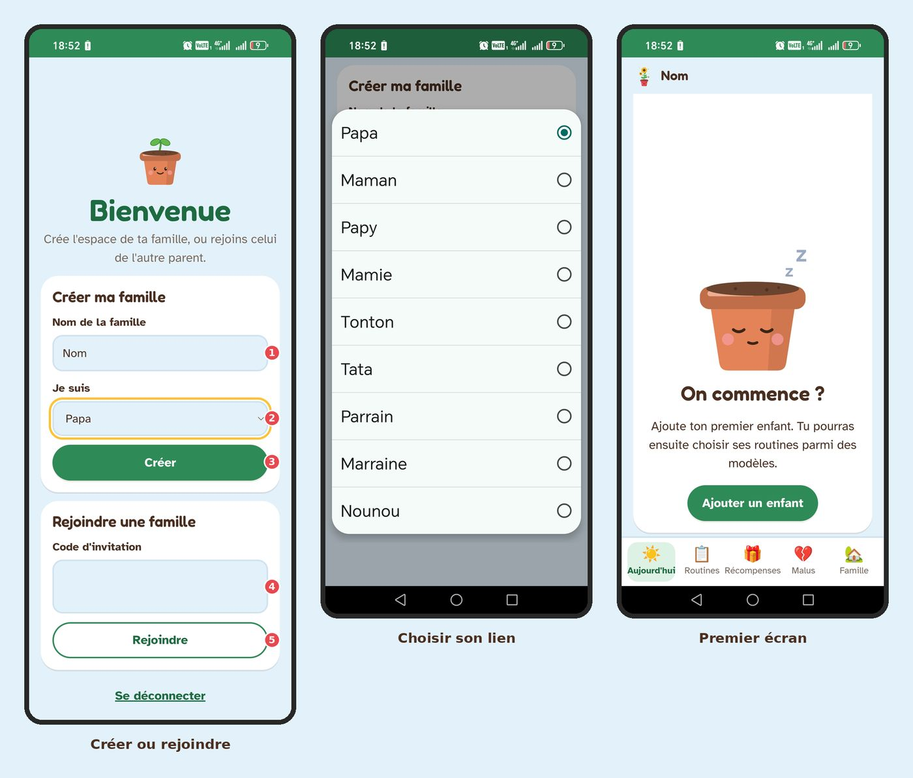
Étape 4 : premiers réglages
Le premier écran « On commence ? » invite à ajouter un enfant. Les cinq onglets du bas (Aujourd'hui, Routines, Récompenses, Malus, Famille) donnent accès à tout le reste.
- ☐ Ajouter un enfant : prénom, avatar et couleur de son pot. Seul le prénom est enregistré.
- ☐ Choisir ses routines dans les modèles (matin, midi, soir), puis ajuster les jours et les étoiles.
- ☐ Ajouter des récompenses depuis le référentiel : les prix sont calculés selon le rythme de l'enfant.
- ☐ Inviter l'autre parent et les proches : Famille > Inviter un membre.
- ☐ Activer les rappels : Famille > Rappels, puis autoriser les notifications.
- ☐ Créer un code parent à 4 chiffres : il protège la sortie du mode enfant.
Connecter le téléphone de l'enfant
- Sur le téléphone d'un parent : Famille, puis Connecter son appareil à côté du prénom de l'enfant. Un code à 6 caractères s'affiche, valable 15 minutes.
- Sur le téléphone de l'enfant : installe l'application (étape 1), touche J'ai un code enfant, saisis le code puis Connecter ce téléphone. Aucun compte n'est nécessaire pour l'enfant.
Si l'enfant utilise le téléphone d'un parent, utilise plutôt Mode enfant ici dans Famille : pas de code à saisir.
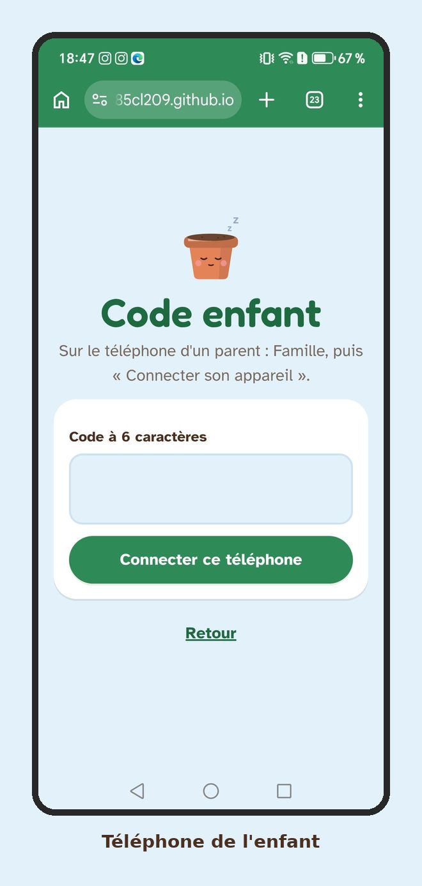
En cas de problème
| Problème | Solution |
|---|---|
| E-mail de confirmation introuvable | Vérifier les spams, chercher « Supabase Auth ». Attendre quelques minutes avant de recréer le compte. |
| « E-mail ou mot de passe incorrect » | Vérifier l'adresse, sinon Mot de passe oublié sur l'écran de connexion. |
| « Confirme d'abord ton adresse e-mail » | Ouvrir le lien de l'e-mail Supabase Auth, puis se reconnecter. |
| Code d'invitation ou code enfant refusé | Le code a expiré (48 heures pour une invitation, 15 minutes pour un enfant) : en générer un nouveau. |
| Le bouton d'installation n'apparaît pas | Menu ⋮ de Chrome, puis Ajouter à l'écran d'accueil. |
| L'ancienne version reste affichée après une mise à jour | Fermer complètement l'application puis la rouvrir, deux fois. |
| « Configuration manquante » | Le site est en cours de déploiement ou mal publié : réessayer plus tard et prévenir l'administrateur. |
2a La page Famille et le premier enfant
Cette partie présente la page Famille et ajoute le premier enfant avec ses routines, en 5 minutes environ.
Elle fait suite à la partie 1 : l'application est installée, le compte est créé et la famille existe. Seul un parent peut ajouter un enfant ; un proche voit la page Famille sans ces boutons.
La page Famille
L'onglet Famille (en bas à droite) regroupe les enfants, les membres et tous les réglages. La page est longue : fais-la défiler pour atteindre les blocs du bas.
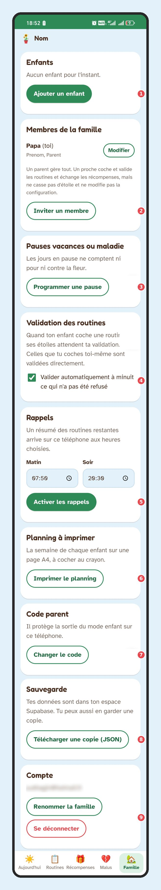
- Enfants : la liste des enfants. Ajouter un enfant est la première chose à faire.
- Membres de la famille : chaque adulte avec son lien (Papa, Maman…) et ses droits. Inviter un membre génère un code pour l'autre parent ou un proche.
- Pauses vacances ou maladie : les jours en pause ne comptent ni pour ni contre la fleur.
- Validation des routines : la case cochée valide automatiquement à minuit ce que personne n'a refusé. Laisse-la cochée au début.
- Rappels : choisis une heure le matin et le soir, puis touche Activer les rappels et autorise les notifications.
- Planning à imprimer : la semaine de chaque enfant sur une page A4, à cocher au crayon.
- Code parent : 4 chiffres demandés pour quitter le mode enfant sur ce téléphone.
- Sauvegarde : télécharge une copie de toutes les données de la famille.
- Compte : renommer la famille ou se déconnecter.
Étape 1 : ajouter un enfant
Seul le prénom est enregistré : pas de nom de famille ni de date de naissance.
- Touche Ajouter un enfant, dans l'onglet Famille ou sur l'écran « On commence ? ».
- Saisis son prénom (1).
- Choisis un avatar (2) parmi les 15 proposés. Il s'affiche à côté de son prénom partout dans l'application.
- Choisis la couleur de son pot (3). Avec plusieurs enfants, une couleur différente pour chacun permet de distinguer leurs plantes.
- Touche Ajouter (4).
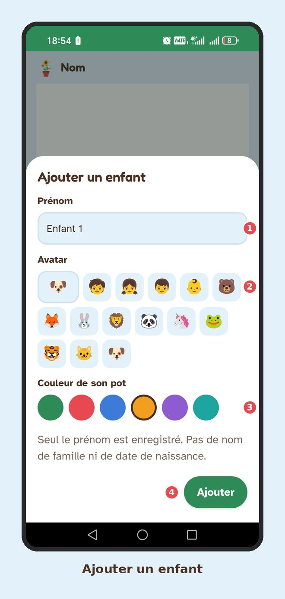
Le prénom, l'avatar et la couleur restent modifiables ensuite : Famille, puis Modifier à côté de l'enfant.
Étape 2 : choisir ses premières routines
Juste après l'ajout, la liste des 22 modèles de routines s'ouvre, classés par moment : le matin, le midi, la journée et le soir.
- Fais défiler la liste et coche les routines qui correspondent à la journée de l'enfant.
- Touche Ajouter la sélection, tout en bas.
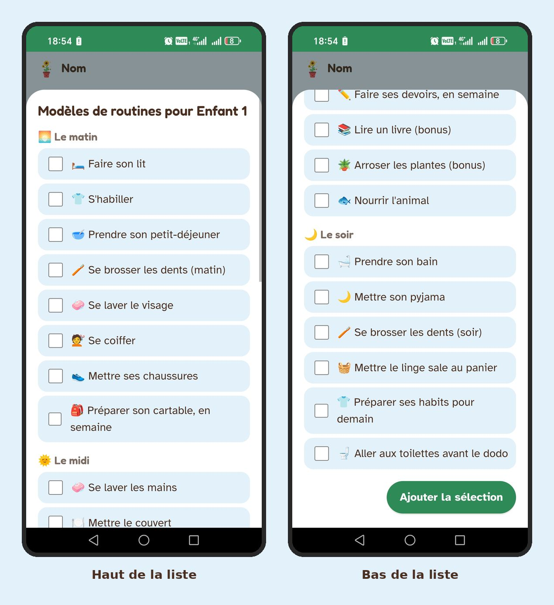
Quelques repères pour bien choisir :
- Commence petit : 3 ou 4 routines par moment suffisent pour un jeune enfant. Tu pourras en ajouter plus tard.
- « En semaine » : la routine n'est prévue que du lundi au vendredi (cartable, devoirs).
- « Bonus » : la routine rapporte des étoiles sans compter dans la bonne journée. Utile pour les petits défis.
- Chaque modèle arrive avec 1 ou 2 étoiles et un lieu. Tu pourras ajuster les jours, les étoiles et le minuteur routine par routine.
Et ensuite
L'enfant apparaît dans l'onglet Aujourd'hui avec son pot et ses routines du jour. Sa première fleur commence le jour même et s'ouvre le premier dimanche situé au moins 7 jours plus tard.
Pour un deuxième enfant, recommence ces deux étapes depuis Famille > Ajouter un enfant.
La suite, dans la partie 2b : modifier une routine, en créer une nouvelle, régler les jours, les étoiles et le minuteur, et ajouter une routine exceptionnelle.
2b Les routines
Cette partie montre comment ajouter, créer, modifier et supprimer les routines d'un enfant, ainsi que les routines exceptionnelles.
Elle fait suite à la partie 2a : l'enfant existe et a déjà quelques routines. Les routines habituelles ne se gèrent que par un parent ; les routines exceptionnelles peuvent aussi être ajoutées par un proche.
L'onglet Routines
L'onglet Routines liste les routines habituelles d'un enfant, classées par moment, puis ses routines exceptionnelles en bas de page.
Tant que l'enfant n'a aucune routine, l'onglet affiche un message qui invite à en choisir trois ou quatre dans les modèles. Commence par Choisir des modèles (voir la section suivante).
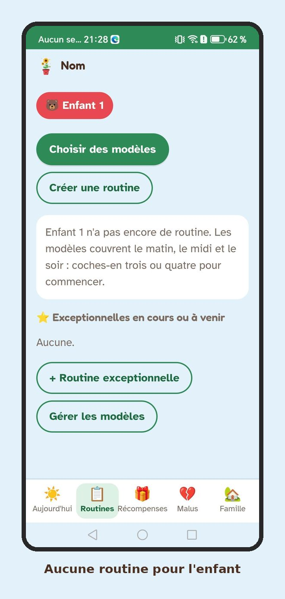
Une fois les routines ajoutées, l'onglet se présente ainsi :
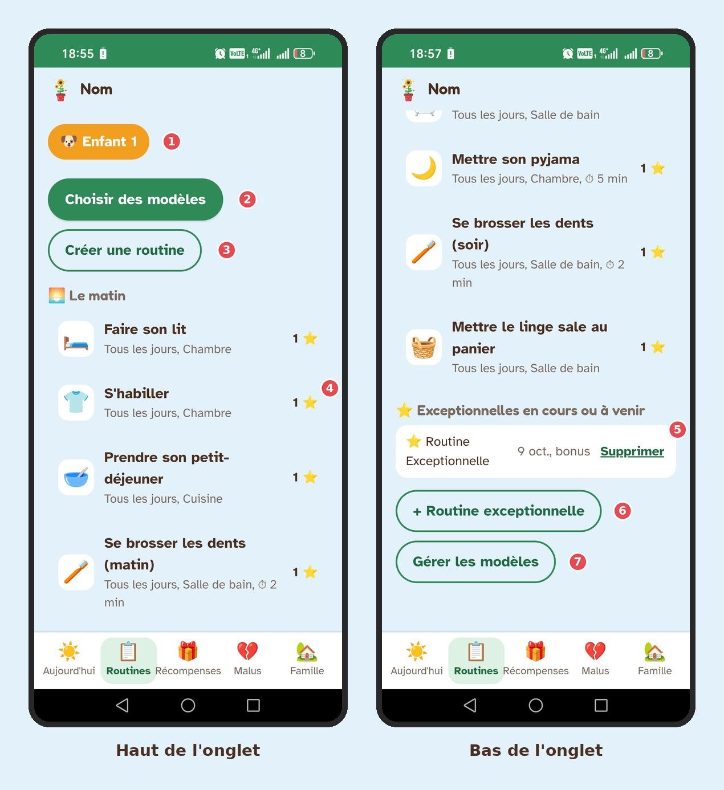
- L'enfant sélectionné : avec plusieurs enfants, touche son nom pour passer de l'un à l'autre.
- Choisir des modèles : ajoute des routines toutes prêtes.
- Créer une routine : une routine sur mesure.
- Une routine : touche-la pour la modifier ou la supprimer. Sous son nom : les jours, le lieu et le minuteur ; à droite : ses étoiles.
- Exceptionnelles en cours ou à venir : avec leur date et leur type, et un lien Supprimer.
- + Routine exceptionnelle : une tâche ponctuelle.
- Gérer les modèles : les routines exceptionnelles gardées comme modèles.
Ajouter d'autres modèles
Les modèles restent disponibles après le premier choix, pour compléter la journée de l'enfant.
- Touche Choisir des modèles (2).
- Les routines déjà ajoutées apparaissent grisées, avec la mention « déjà ajoutée » : elles ne peuvent pas être ajoutées deux fois.
- Coche les nouvelles routines, puis touche Ajouter la sélection en bas de la liste.
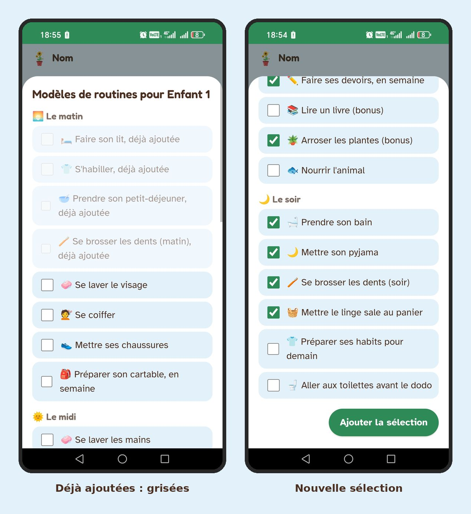
Créer une routine
Touche Créer une routine (3) pour une routine qui n'existe pas dans les modèles, par exemple « Entraînement de foot ».
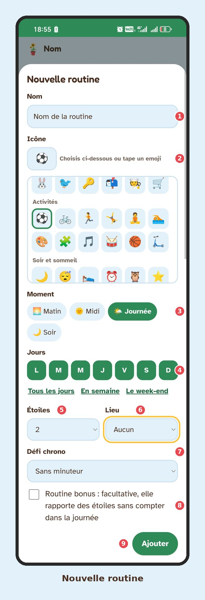
- Nom : court et concret, l'enfant le lira tous les jours.
- Icône : choisis-la dans la liste classée par catégories (fais-la défiler), ou tape un emoji dans la case.
- Moment : matin, midi, journée ou soir. Il décide dans quel groupe la routine apparaît.
- Jours : en vert, les jours où la routine est prévue. Touche un jour pour le retirer, ou utilise les raccourcis Tous les jours, En semaine et Le week-end.
- Étoiles : de 1 à 5. Plus la routine demande d'effort, plus elle rapporte.
- Lieu : facultatif. Il s'affiche sous le nom pour aider l'enfant à se repérer.
- Défi chrono : facultatif. Un minuteur de 2 à 30 minutes que l'enfant peut lancer pour transformer la routine en défi.
- Routine bonus : cochée, la routine rapporte des étoiles mais ne compte pas dans la bonne journée.
- Ajouter : la routine apparaît dans l'onglet Routines et dans la journée de l'enfant.
Les listes Étoiles, Lieu et Défi chrono s'ouvrent ainsi :
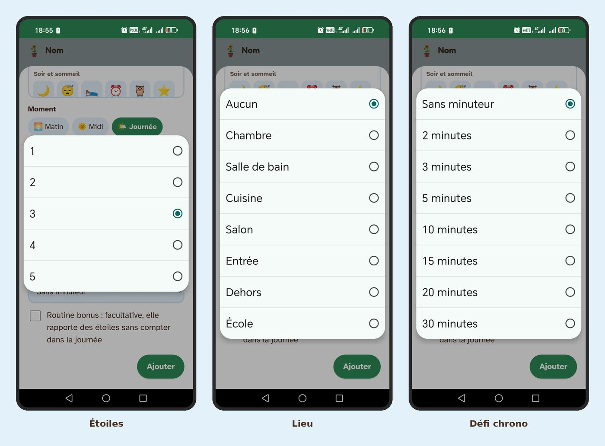
Modifier ou supprimer une routine
- Dans l'onglet Routines, touche la routine (4). Le formulaire Modifier la routine s'ouvre, déjà rempli.
- Change ce qui doit l'être : nom, icône, moment, jours, étoiles, lieu, minuteur ou bonus.
- En bas du formulaire, touche Enregistrer, ou Supprimer pour retirer la routine, puis confirme.
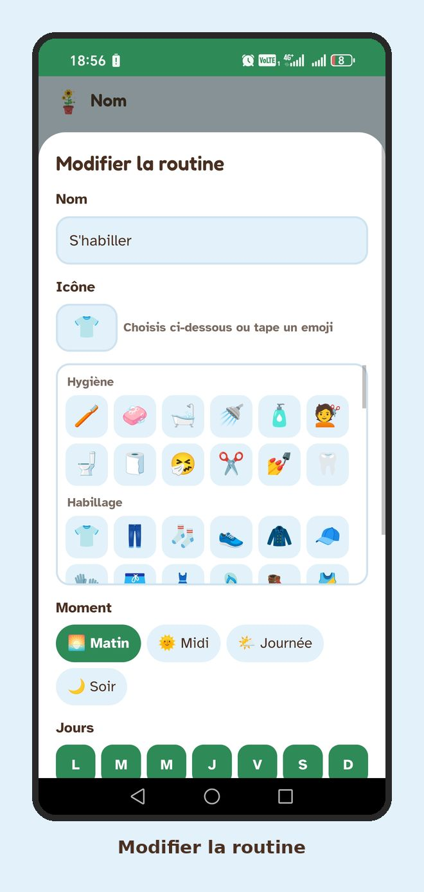
Supprimer une routine la retire des journées à venir. Les étoiles déjà gagnées avec elle sont conservées, et la plante ne recule pas.
Ajouter une routine exceptionnelle
Une routine exceptionnelle est une tâche ponctuelle : un jour précis, ou à faire avant une date. Les parents et les proches peuvent en ajouter, depuis l'onglet Routines (6) ou depuis la carte de l'enfant dans l'onglet Aujourd'hui.
- Touche + Routine exceptionnelle.
- Choisis un de tes modèles, une des 10 suggestions, ou touche Créer une nouvelle en bas de la liste.
- Complète le formulaire :
- Nom (1) et icône, déjà remplis si tu pars d'une suggestion.
- Quand (2) : Le = ce jour-là uniquement ; Avant le = visible chaque jour jusqu'à ce qu'elle soit faite.
- La date (3).
- Type (4) : Bonus (par défaut) rapporte des étoiles sans pouvoir gâcher la journée ; Obligatoire compte dans la bonne journée.
- Étoiles et moment (5).
- Garder comme modèle (6) : coche-la pour une tâche qui reviendra. Elle apparaîtra en tête de liste la prochaine fois.
- Touche Ajouter (7).
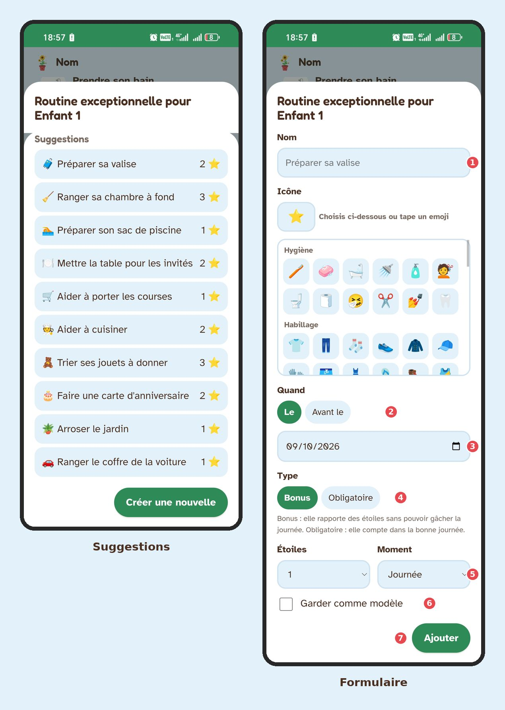
La routine apparaît dans la section « Exceptionnelles en cours ou à venir » (5), puis disparaît une fois sa date passée. Pour retirer un modèle devenu inutile : Gérer les modèles (7).
Le résultat dans l'onglet Aujourd'hui
Les routines prévues ce jour-là apparaissent dans l'onglet Aujourd'hui, sur la carte de l'enfant. Le compteur à droite indique les routines faites sur le total (ici 0/11), et la ligne sous le prénom indique où en est la fleur.
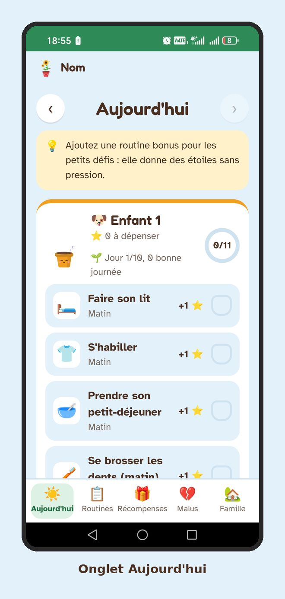
La suite, dans la partie 2c : les récompenses et les malus.
2c Récompenses et malus
L'onglet Récompenses sert à définir ce que l'enfant peut s'offrir avec ses étoiles. Les prix sont calculés automatiquement selon son rythme. Cette partie suit les parties 2a (enfant créé) et 2b (routines créées) : sans routines, le rythme vaut 0 et aucun prix ne peut être calculé.
Le principe du prix : durée d'effort × rythme. Le rythme, c'est le nombre d'étoiles que l'enfant gagne en moyenne par jour, soit 75 % des étoiles prévues dans la semaine, divisé par 7. Avec un rythme de 11,4 ⭐ par jour, une récompense d'environ 1 jour coûte 11 ⭐ et une d'environ 1 mois coûte 340 ⭐. Le prix est arrondi puis figé à la création ; il ne bouge pas si les routines changent ensuite.
L'onglet Récompenses
Ouvre l'onglet Récompenses dans la barre du bas. Il affiche le solde d'étoiles à dépenser de l'enfant sélectionné et son rythme.
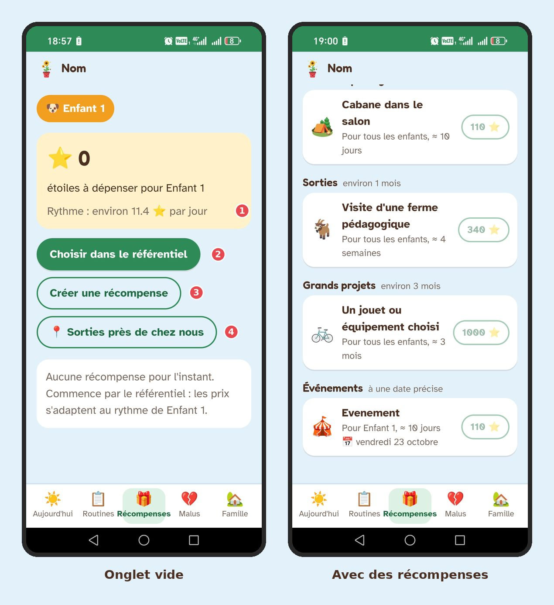
- Rythme : étoiles gagnées par jour en moyenne (ici environ 11,4). C'est la base de tous les prix.
- Choisir dans le référentiel : le plus rapide pour démarrer.
- Créer une récompense : une récompense à toi.
- Sorties près de chez nous : ce bouton est retiré pour le moment, il reviendra plus tard.
Une fois remplie, la liste est rangée par niveau, du moins cher au plus cher. Chaque carte indique pour qui elle vaut, la durée d'effort approximative et le prix. Un événement affiche aussi sa date.
Choisir dans le référentiel
Le référentiel propose des récompenses toutes prêtes, classées en six niveaux. Les prix affichés sont déjà calculés pour chaque enfant.
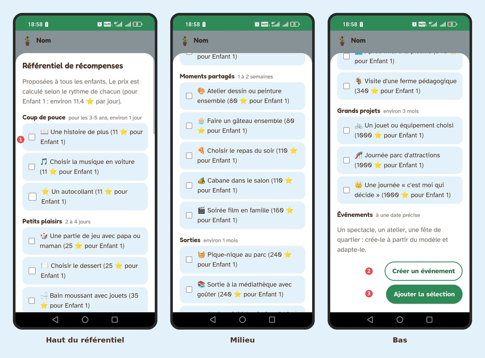
- Coche les récompenses qui te conviennent, dans tous les niveaux.
- Créer un événement ouvre le formulaire événement, déjà prérempli.
- Ajouter la sélection ajoute d'un coup tout ce qui est coché. Les récompenses ajoutées valent pour tous les enfants, chacun à son prix.
| Niveau | Durée d'effort | Exemple (rythme 11,4) |
|---|---|---|
| Coup de pouce | environ 1 jour, pour les 3-5 ans | Une histoire de plus : 11 ⭐ |
| Petits plaisirs | 2 à 4 jours | Choisir le dessert : 25 ⭐ |
| Moments partagés | 1 à 2 semaines | Soirée film en famille : 160 ⭐ |
| Sorties | environ 1 mois | Visite d'une ferme pédagogique : 340 ⭐ |
| Grands projets | environ 3 mois | Un jouet ou équipement choisi : 1000 ⭐ |
| Événements | à une date précise | Un spectacle, un atelier : à créer |
Tu peux revenir dans le référentiel à tout moment pour en ajouter d'autres.
Créer une récompense ou un événement
Le formulaire est le même pour une récompense et pour un événement. Seul le niveau change : un événement est une récompense du niveau « Événements », avec une date.
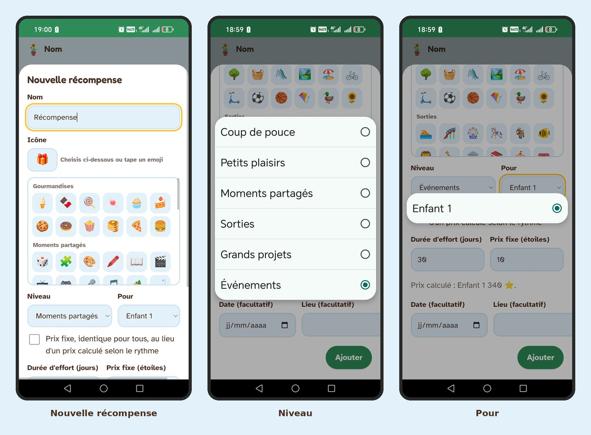
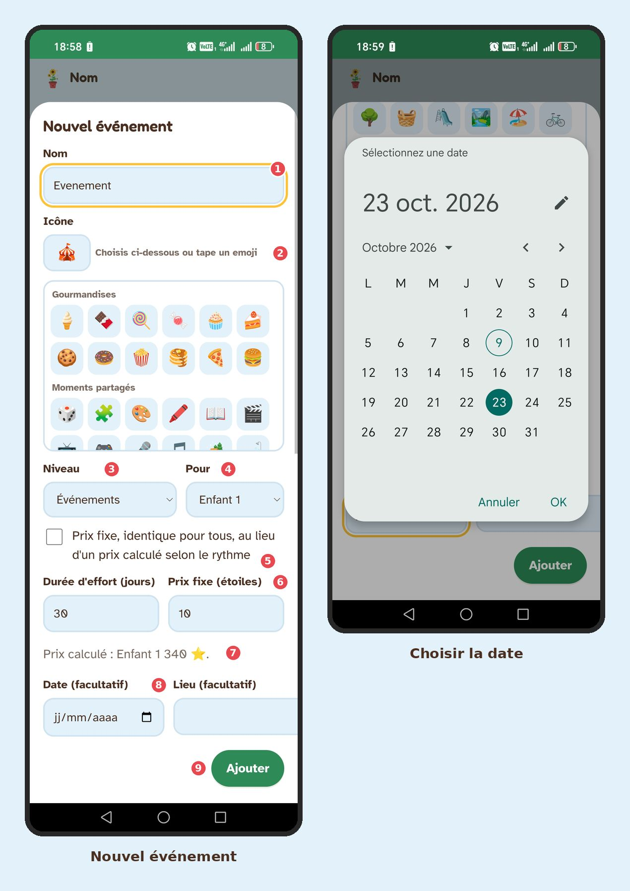
- Nom : ce que l'enfant verra, par exemple « Spectacle de marionnettes ».
- Icône : touche une icône dans la grille ou tape un emoji.
- Niveau : de Coup de pouce à Événements. Il sert au rangement et propose une durée par défaut.
- Pour : l'enfant concerné.
- Prix fixe : coche cette case pour un prix identique pour tous, au lieu d'un prix calculé selon le rythme.
- Durée d'effort (jours) si la case est décochée, ou Prix fixe (étoiles) si elle est cochée. Un seul des deux champs compte.
- Prix calculé : l'aperçu du prix pour chaque enfant. Ici 30 jours × 11,4 ⭐, arrondi à 340 ⭐.
- Date et Lieu : facultatifs. Pour un événement, mets la date ; elle s'affiche sur la carte.
- Ajouter enregistre la récompense dans la liste.
Conseil : pour un événement, choisis une durée qui laisse à l'enfant le temps d'économiser avant la date. Un spectacle dans 10 jours ≈ 10 jours d'effort.
Les malus (étoiles cassées)
Un malus retire 1 à 3 étoiles du solde à dépenser pour un écart immédiat. Le solde ne descend jamais sous zéro, et la plante et les badges ne bougent pas. Seuls les parents peuvent casser une étoile.
L'onglet Malus
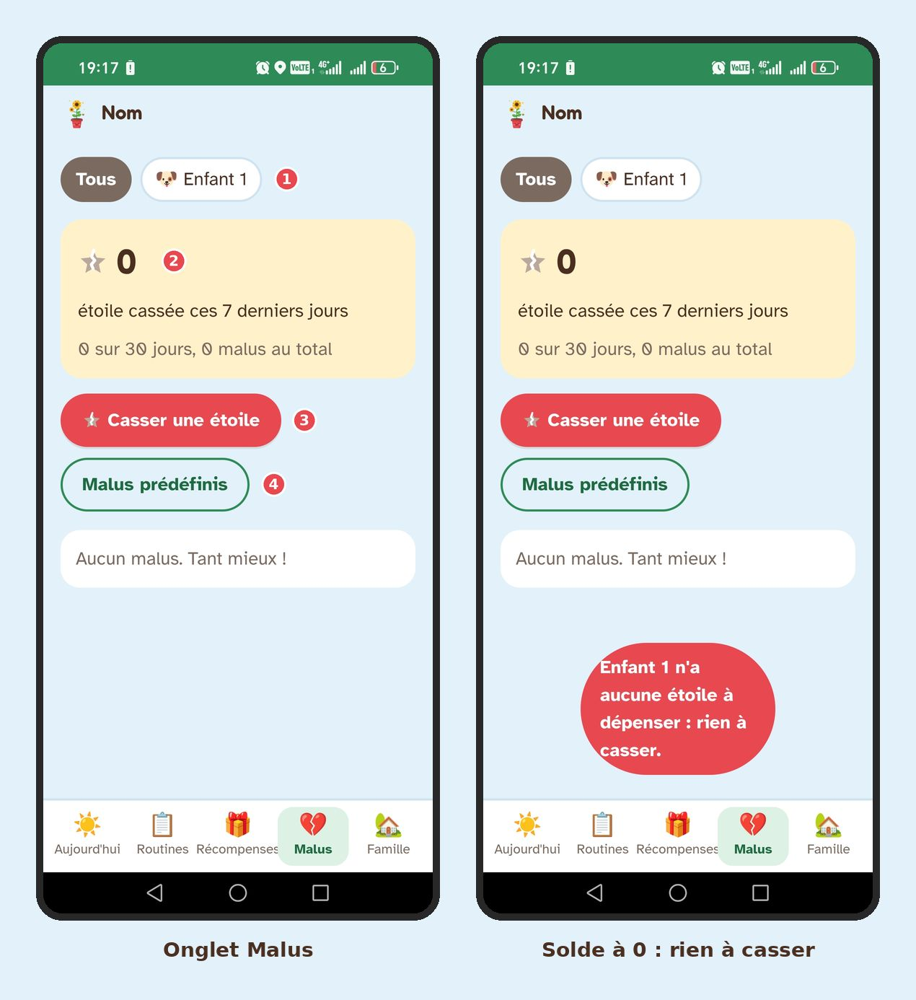
- Tous / Enfant : filtre l'historique. Le malus s'applique à l'enfant sélectionné.
- Compteur : étoiles cassées sur 7 jours, sur 30 jours et nombre total de malus.
- Casser une étoile : applique un malus.
- Malus prédéfinis : la liste commune aux deux parents.
Si l'enfant n'a aucune étoile à dépenser, l'application l'indique : il n'y a rien à casser.
Préparer les malus prédéfinis
Les malus prédéfinis valent pour tous les enfants. Ils garantissent qu'un même écart coûte la même chose, quel que soit le parent. Fais-le une fois, avant le premier malus.
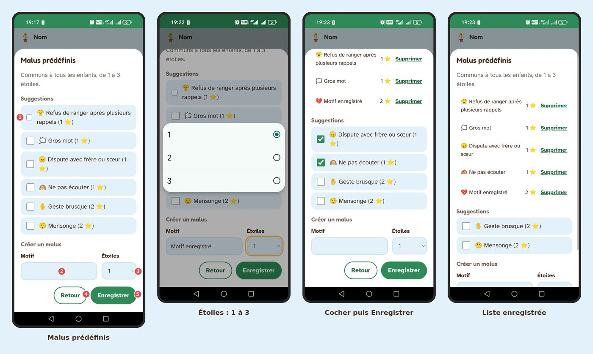
- Coche les suggestions qui te conviennent.
- Motif : pour un malus à toi, écris-le ici.
- Étoiles : choisis 1, 2 ou 3.
- Retour revient à la fenêtre Casser une étoile sans enregistrer.
- Enregistrer ajoute d'un coup les cases cochées et le motif saisi.
Les malus enregistrés passent en haut de la liste avec un lien Supprimer. Un malus créé à la main prend l'icône cœur brisé.
| Suggestion | Étoiles |
|---|---|
| Refus de ranger après plusieurs rappels | 1 |
| Gros mot | 1 |
| Dispute avec frère ou sœur | 1 |
| Ne pas écouter | 1 |
| Geste brusque | 2 |
| Mensonge | 2 |
Casser une étoile
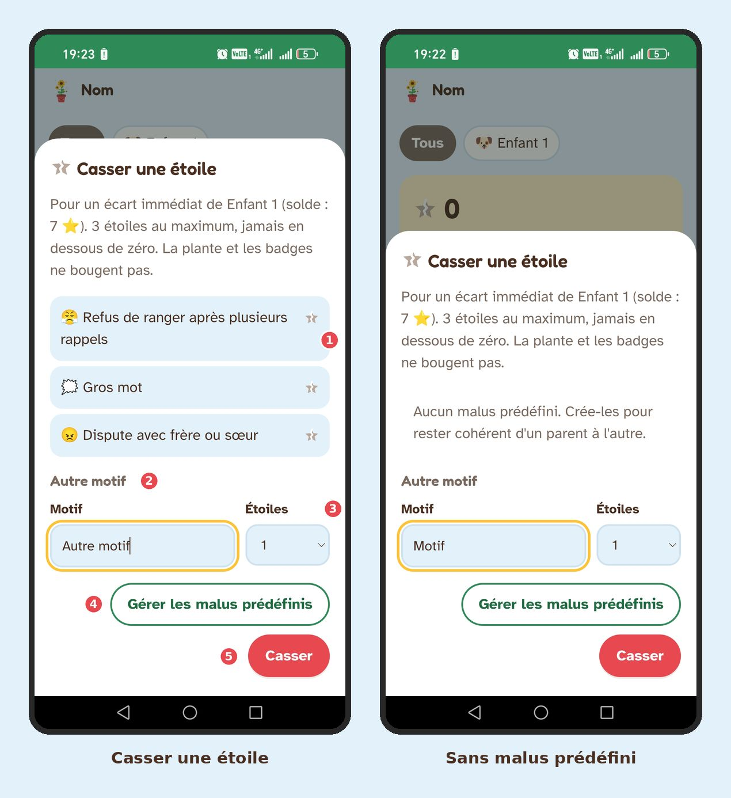
- Touche un malus prédéfini : il est appliqué tout de suite, sans autre confirmation.
- Autre motif : pour un cas non prévu, écris le motif.
- Étoiles : 1, 2 ou 3.
- Gérer les malus prédéfinis ouvre la liste commune.
- Casser applique l'autre motif.
Le rappel en haut de la fenêtre indique le solde actuel de l'enfant.
Historique et annulation
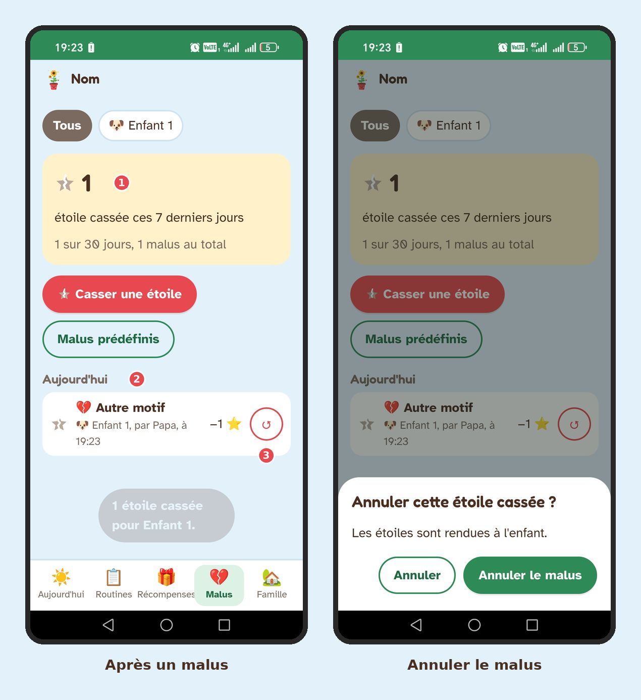
- Le compteur se met à jour.
- L'historique est classé par jour, du plus récent au plus ancien. Chaque ligne indique le motif, l'enfant, le parent qui a cassé l'étoile, l'heure et le nombre d'étoiles.
- Annuler (flèche ronde) : après confirmation, les étoiles sont rendues à l'enfant. Pratique en cas d'erreur d'enfant ou de motif.
2d Membres et téléphone de l'enfant
L'onglet Famille sert à inviter les adultes qui suivent l'enfant et à connecter son téléphone. Cette partie suit la partie 2a (enfant créé).
Deux niveaux de droits existent :
| Droits | Ce qu'il peut faire |
|---|---|
| Parent | Tout : routines, récompenses, malus, membres, téléphones, réglages. |
| Proche | Cocher et valider les routines, échanger les récompenses. Il ne casse pas d'étoile et ne modifie pas la configuration. |
Chaque validation garde le nom de l'adulte qui l'a faite, ce qui permet de savoir qui a validé quoi.
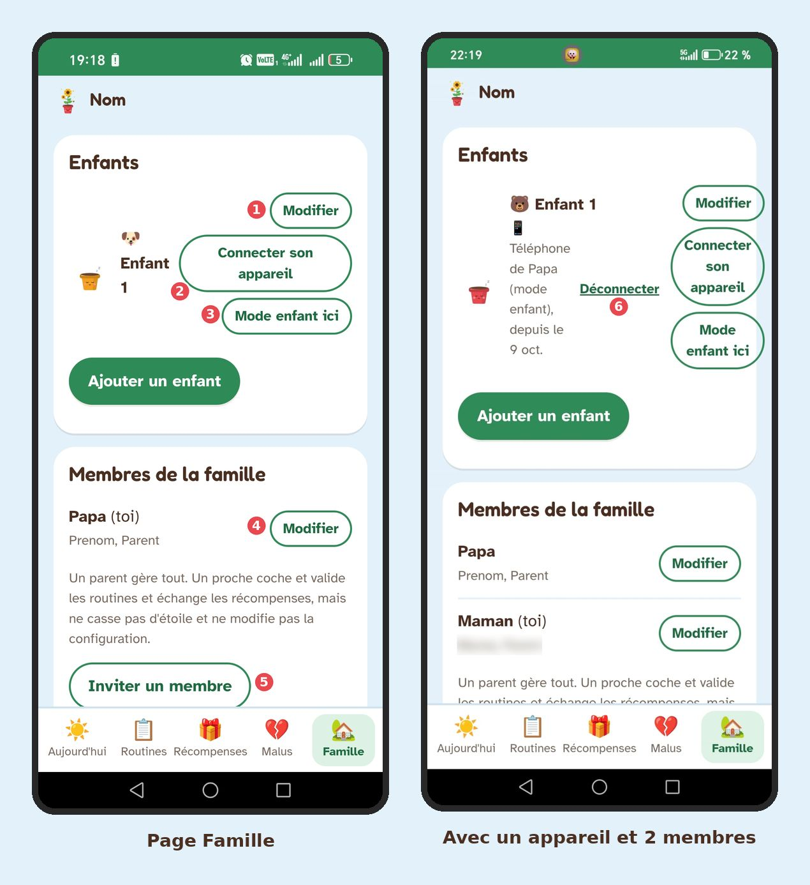
- Modifier l'enfant.
- Connecter son appareil : le téléphone de l'enfant.
- Mode enfant ici : ton téléphone passe en mode enfant.
- Modifier un membre.
- Inviter un membre.
- Déconnecter : apparaît sous l'enfant pour chaque téléphone connecté.
Inviter un membre
L'invitation se fait par un code à 6 caractères, valable 48 heures. Seul un parent peut inviter.
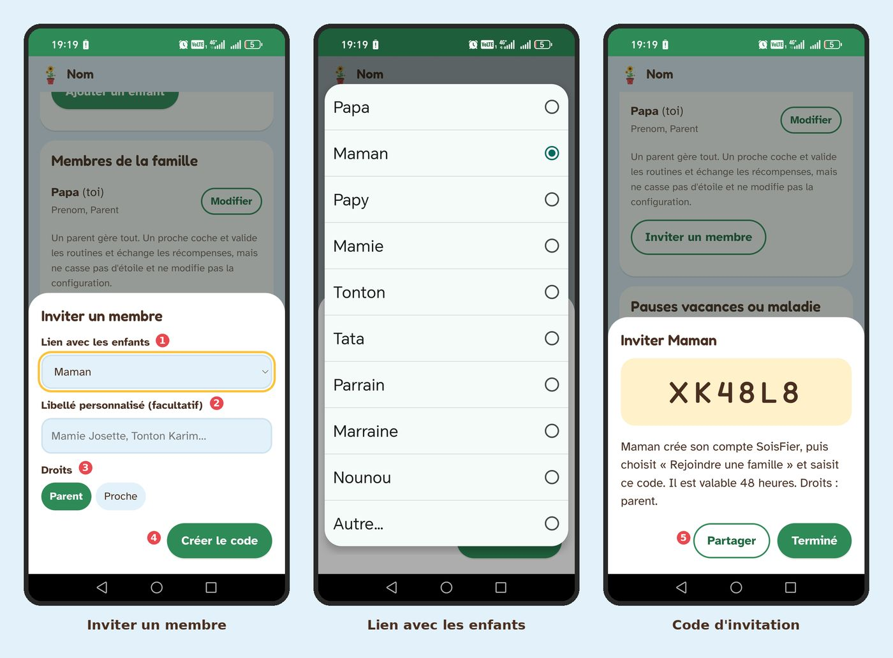
- Lien avec les enfants : Papa, Maman, Papy, Mamie, Tonton, Tata, Parrain, Marraine, Nounou ou Autre.
- Libellé personnalisé (facultatif) : le nom affiché, par exemple « Mamie Josette ». Utile s'il y a deux mamies.
- Droits : Parent ou Proche (voir le tableau plus haut).
- Créer le code affiche le code d'invitation.
- Partager envoie le code par SMS, WhatsApp ou mail. Sinon, dicte-le.
Si le code expire avant d'être utilisé, crées-en simplement un nouveau.
Côté invité : rejoindre la famille
La personne invitée fait ces étapes sur son propre téléphone.
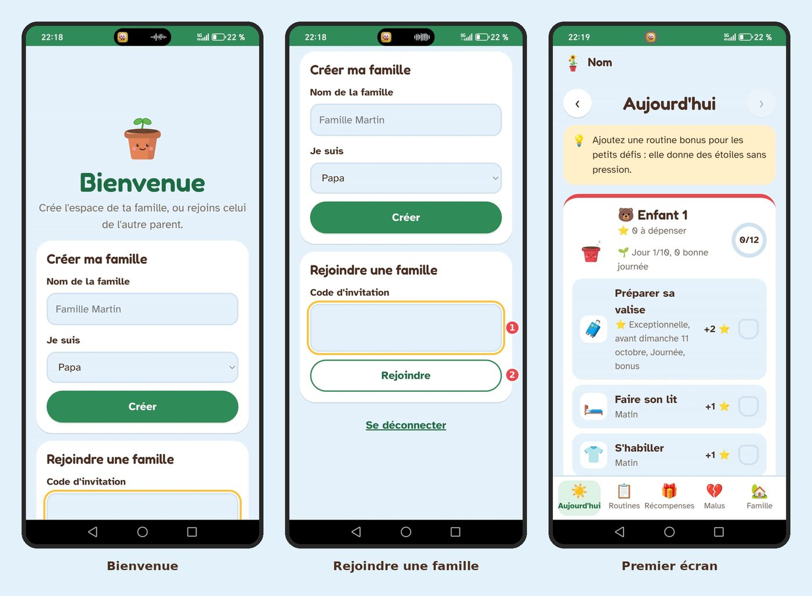
- Elle installe SoisFier et crée son compte, comme dans la partie 1.
- Sur l'écran Bienvenue, elle ignore « Créer ma famille » et descend jusqu'à Rejoindre une famille.
- Elle saisit le code d'invitation (1) puis touche Rejoindre (2).
- Elle arrive sur l'écran Aujourd'hui, avec les enfants et les routines déjà en place. Le lien et les droits choisis à l'invitation sont appliqués automatiquement.
Attention : ne pas créer une deuxième famille par erreur. Les enfants et les routines ne seraient pas partagés.
Modifier ou retirer un membre
Touche Modifier à côté du membre. Chacun peut changer son propre lien et son libellé. Les droits et le retrait d'un autre membre sont réservés aux parents.
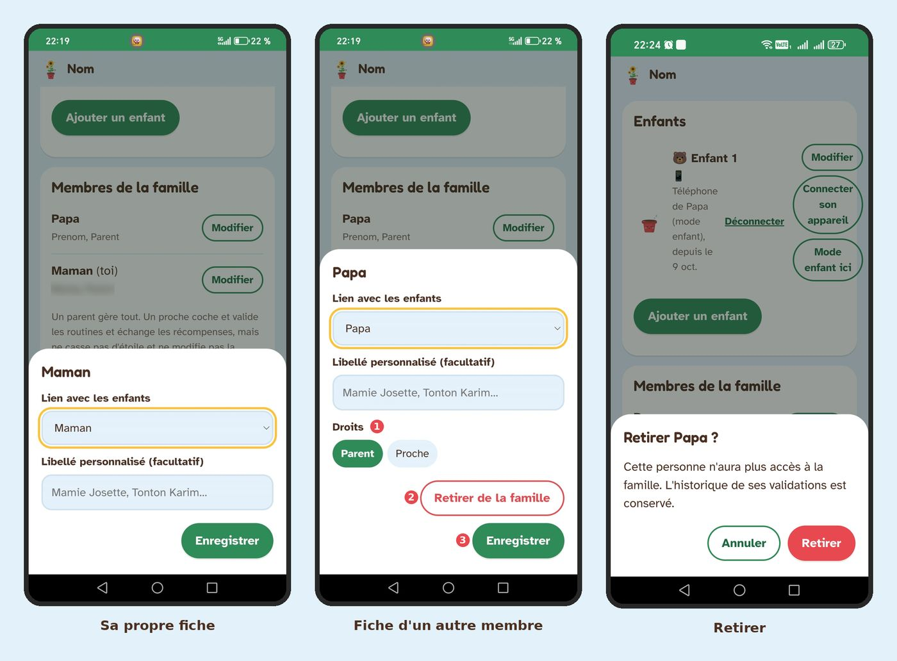
- Droits : passe un membre de Parent à Proche, ou l'inverse.
- Retirer de la famille : après confirmation, la personne n'a plus accès à la famille. L'historique de ses validations est conservé.
- Enregistrer valide les changements.
Sur ta propre fiche, il n'y a ni Droits ni Retirer : un parent ne peut pas se rétrograder ni se retirer lui-même par erreur.
Connecter le téléphone de l'enfant
L'enfant n'a pas de compte ni d'adresse mail : son téléphone est relié par un code à usage unique, valable 15 minutes.
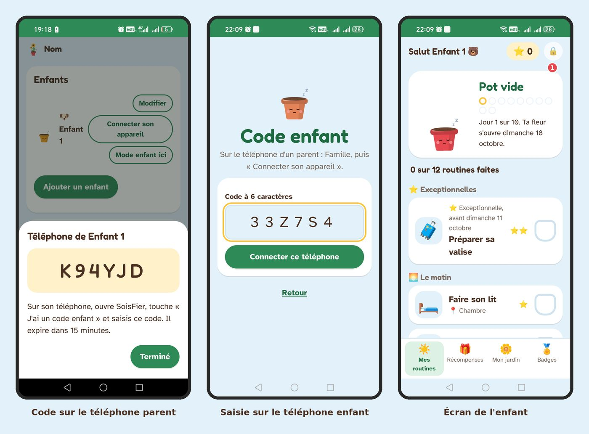
- Sur ton téléphone : Famille, puis Connecter son appareil sous l'enfant. Un code à 6 caractères s'affiche.
- Sur le téléphone de l'enfant : ouvre SoisFier et touche J'ai un code enfant sur l'écran de connexion (voir la partie 1).
- Saisis le code puis touche Connecter ce téléphone.
- L'enfant arrive sur son écran : son prénom, ses étoiles, son pot et ses routines du jour. Le cadenas (1) en haut à droite permet à un parent de déconnecter ce téléphone.
- Sur ton téléphone, touche Terminé. Le téléphone apparaît sous l'enfant dans la page Famille.
Pour retirer un téléphone (perdu, remplacé, ancien test) : Déconnecter sur sa ligne, puis confirme. Il faudra un nouveau code pour le reconnecter.
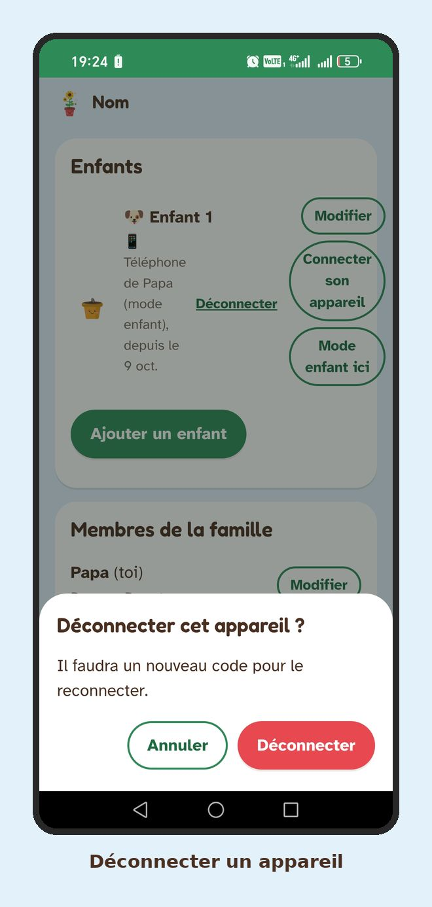
Mode enfant sur ton téléphone
Pour un enfant sans téléphone, ton propre téléphone peut passer en mode enfant le temps qu'il coche ses routines.
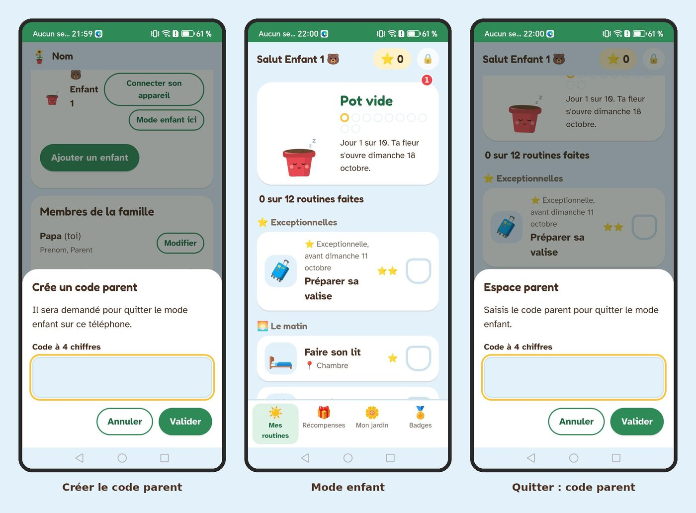
- Famille, puis Mode enfant ici sous l'enfant.
- La première fois, crée un code parent à 4 chiffres. Il sera demandé pour quitter le mode enfant sur ce téléphone ; ne le donne pas à l'enfant.
- L'écran de l'enfant s'affiche, comme sur son propre téléphone.
- Pour revenir à l'espace parent, touche le cadenas (1) puis saisis le code parent.
Le téléphone apparaît sous l'enfant comme « Téléphone de Papa (mode enfant) ». Repasser en mode enfant réutilise cette même ligne, sans en créer une nouvelle.
Modifier un enfant
Touche Modifier sous l'enfant pour changer son prénom, son avatar ou la couleur de son pot.
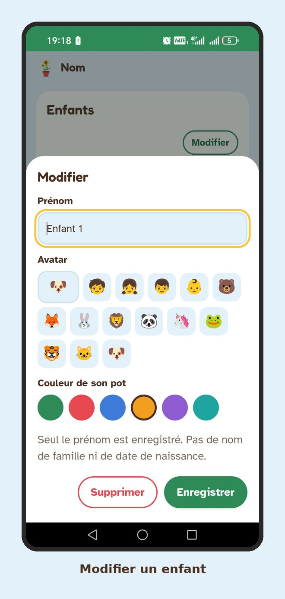
Seul le prénom est enregistré : pas de nom de famille ni de date de naissance. Supprimer efface l'enfant ainsi que ses routines, ses étoiles et son jardin. À réserver au cas d'un enfant créé par erreur.
3 Le quotidien du parent
Au quotidien, le parent fait trois gestes : cocher ou valider les routines, échanger les récompenses et, si besoin, mettre une pause. Tout se fait depuis les onglets Aujourd'hui et Récompenses ; les malus sont dans la partie 2c.
La règle à retenir : une étoile ne compte qu'une fois validée par un adulte. Ce qui n'est pas refusé est validé automatiquement à minuit.
L'écran Aujourd'hui
C'est l'écran d'ouverture. Il montre, pour chaque enfant, les routines prévues ce jour-là.
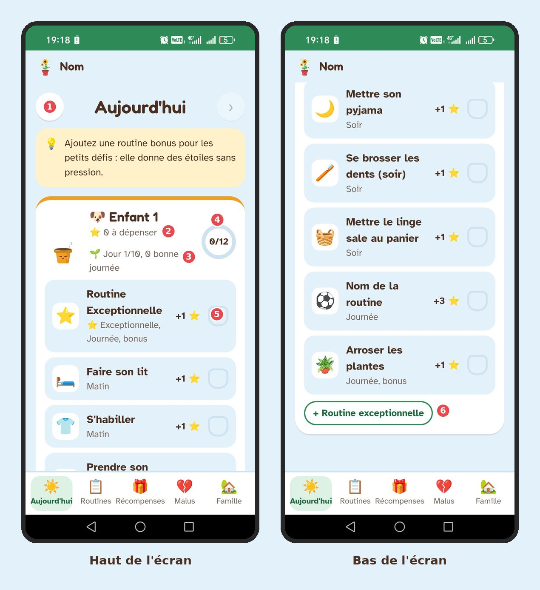
- Flèches : revenir jusqu'à 6 jours en arrière pour cocher un oubli. Impossible d'aller dans le futur.
- À dépenser : le solde d'étoiles de l'enfant.
- Jour 1/10, 0 bonne journée : où en est la fleur en cours et combien de bonnes journées elle compte déjà.
- Compteur : routines faites sur le total du jour.
- Case à cocher de chaque routine.
- + Routine exceptionnelle : ajoute une routine ponctuelle (partie 2b).
Le bandeau ampoule donne un conseil différent selon la situation. Il n'apparaît que sur le jour en cours.
Cocher et valider les routines
Tout dépend de qui coche :
| Qui coche | Ce qui se passe |
|---|---|
| Un adulte, depuis Aujourd'hui | La routine est validée tout de suite : elle passe en vert avec « ✓ Papa ». |
| L'enfant, depuis son téléphone ou le mode enfant | La routine part dans le bloc À valider en haut de l'écran Aujourd'hui. |
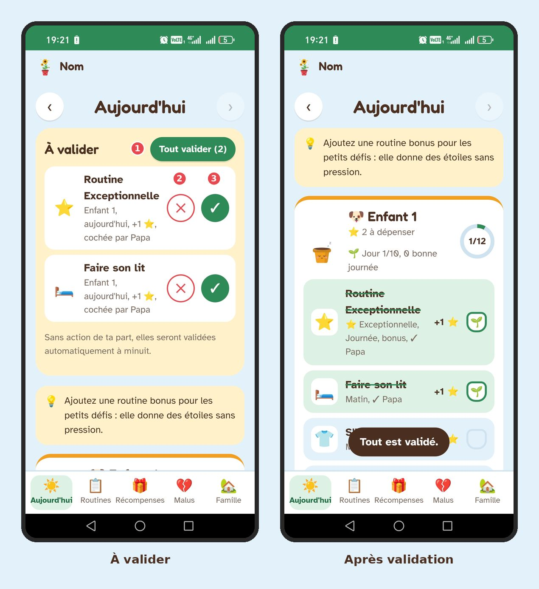
- Tout valider valide d'un coup toutes les routines en attente.
- Refuser (croix) : la routine est à refaire, sans pénalité. Les étoiles ne sont pas données.
- Valider (coche) : les étoiles s'ajoutent au solde et comptent pour la fleur.
Chaque ligne indique l'enfant, le jour, les étoiles et qui a coché. Sans action de ta part, tout ce qui reste est validé automatiquement à minuit.
Tu as coché par erreur ? Retouche la case dans les 5 minutes pour décocher. Au-delà, la routine est définitivement validée ; pour retirer des étoiles, il faut passer par un malus.
Échanger une récompense
Quand l'enfant a assez d'étoiles, l'échange se fait depuis l'onglet Récompenses, en choisissant l'enfant en haut s'il y en a plusieurs.
- Prix en vert plein : l'enfant a assez d'étoiles. Touche le prix pour échanger.
- Prix en contour clair : pas encore assez d'étoiles, le bouton ne fait rien.
Confirme avec Échanger : le prix est retiré du solde (ici 18 − 11 = 7 ⭐) et le message « Récompense échangée » s'affiche. La récompense reste dans la liste et peut être échangée à nouveau plus tard.
L'enfant peut aussi échanger lui-même depuis son téléphone (partie 4).
Chaque échange est noté dans l'Historique, tout en bas de l'onglet Récompenses, avec la date, le prix et qui l'a fait. Un parent peut l'Annuler (1) depuis cette liste : après confirmation, les étoiles sont rendues à l'enfant.
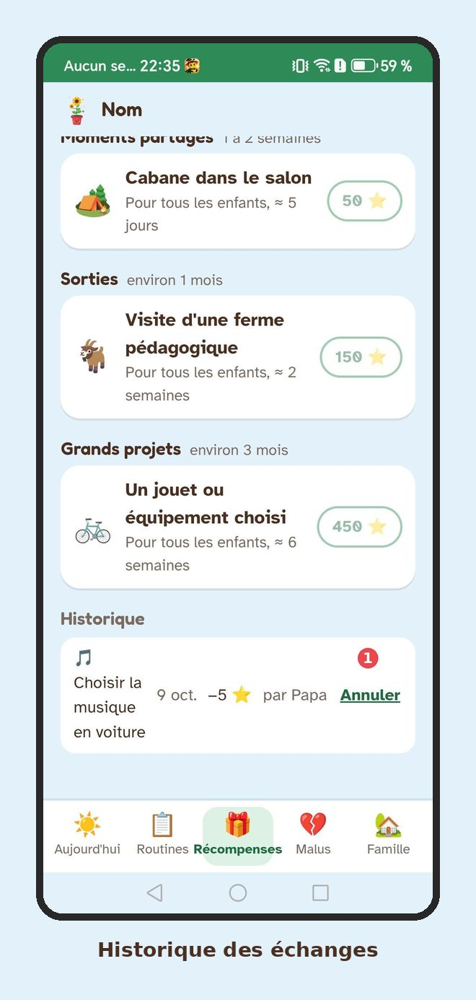
Toucher la carte d'une récompense (hors prix) ouvre sa fiche pour la modifier ou la supprimer.
Si le rythme de l'enfant change de plus de 20 % (routines ajoutées ou retirées), un bandeau propose de recalculer les prix.
Pauses vacances ou maladie
Une pause neutralise des jours : ils ne comptent ni pour ni contre la fleur. Rien à perdre pendant les vacances, une maladie ou un week-end chez les grands-parents.
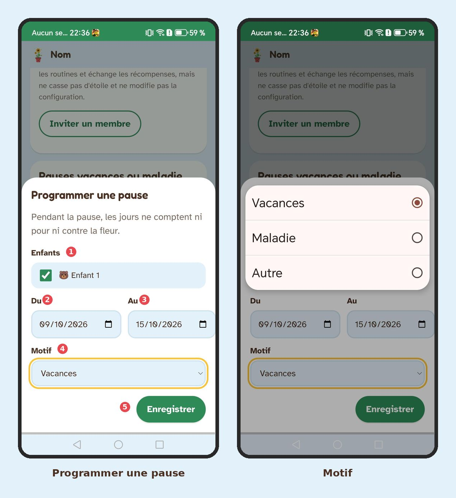
- Famille, section Pauses vacances ou maladie, puis Programmer une pause.
- Enfants : coche le ou les enfants concernés.
- Du et Au : premier et dernier jour inclus. La fin doit être après le début.
- Motif : Vacances, Maladie ou Autre.
- Enregistrer.
La pause apparaît ensuite dans la liste de la section, avec l'enfant, le motif et les dates. Supprimer l'annule : les jours concernés comptent à nouveau normalement. Une pause peut être programmée à l'avance ou posée après coup, par exemple au retour d'une maladie.
4 Côté enfant
Cette partie montre ce que voit l'enfant, sur son téléphone ou en mode enfant (partie 2d). À lire avec lui la première fois.
| Onglet | Ce qu'il y fait |
|---|---|
| Mes routines | Coche ce qu'il a fait et lance un défi chrono. |
| Récompenses | Voit ce qu'il peut s'offrir et combien il lui manque. |
| Mon jardin | Suit sa fleur, son parterre de la saison et son jardin de l'année. |
| Badges | Voit ses badges gagnés et les prochains à décrocher. |
L'enfant ne peut rien modifier : ni routines, ni prix, ni malus. Le cadenas en haut à droite est réservé aux parents.
Mes routines
L'écran d'ouverture liste les routines du jour, rangées par moment : exceptionnelles, matin, journée, soir.
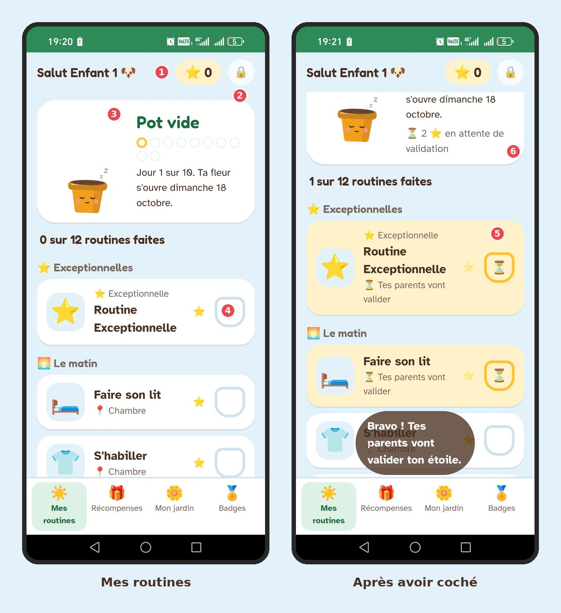
- Étoiles à dépenser.
- Cadenas : réservé aux parents (code parent ou petit calcul).
- La fleur en cours : son nom, un rond par jour et la date à laquelle elle s'ouvre.
- Case à cocher : l'enfant la touche quand c'est fait.
- La routine passe en jaune avec un sablier : « Tes parents vont valider ».
- Les étoiles en attente de validation s'affichent sous la fleur ; elles rejoignent le solde quand un parent valide.
L'enfant peut décocher tant qu'un parent n'a pas validé. Sans internet, les coches sont gardées sur le téléphone et envoyées dès que la connexion revient.
Le défi chrono
Une routine peut avoir un minuteur (réglé par le parent dans la routine, partie 2b). Un bouton jaune Défi X min apparaît alors sous la routine.
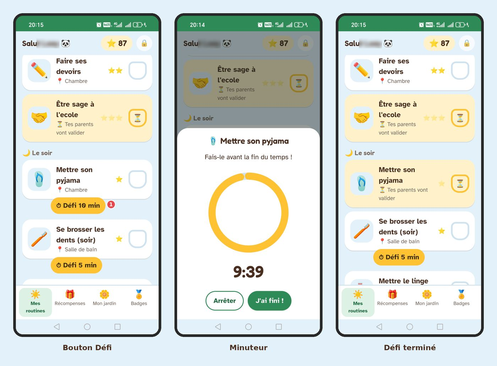
- L'enfant touche Défi 10 min : le minuteur démarre.
- Quand c'est fait, il touche J'ai fini !. Avant la fin du temps, le message « Défi réussi » s'affiche.
- La routine est cochée et part en validation comme d'habitude.
Arrêter coupe le minuteur sans cocher. Un défi réussi ne donne pas d'étoile en plus, mais il compte pour les badges « Défis », et le parent le voit dans le bloc À valider (« défi chrono réussi »).
Les récompenses côté enfant
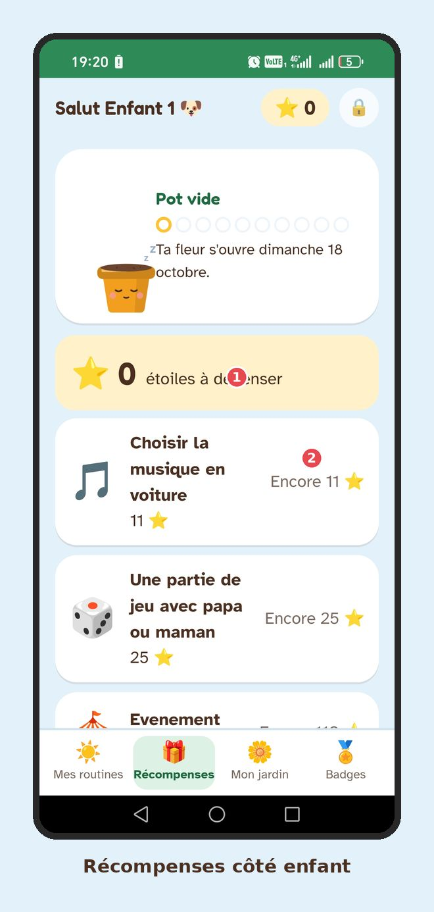
- Étoiles à dépenser, en haut.
- Encore X ⭐ : ce qu'il manque pour chaque récompense. Quand l'enfant a assez, le texte devient un bouton Je choisis.
Quand l'enfant a assez d'étoiles :
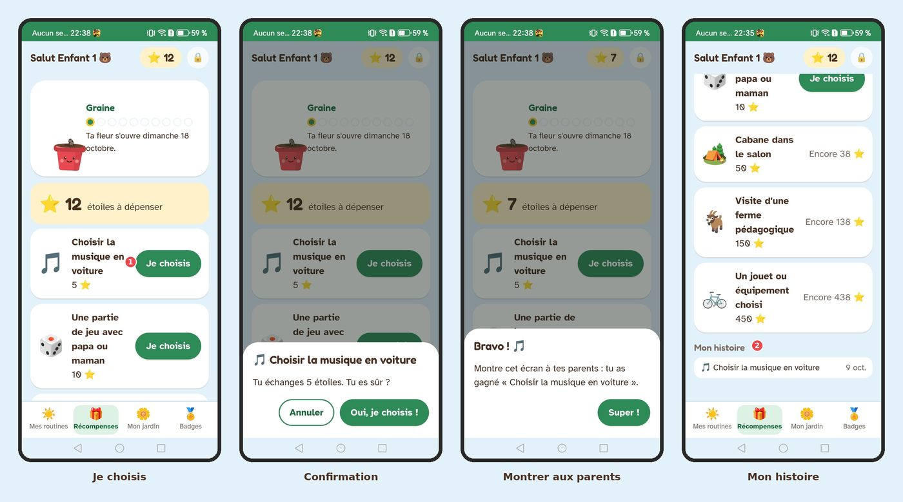
- Il touche Je choisis, puis confirme avec Oui, je choisis !. Les étoiles sont retirées tout de suite (ici 12 − 5 = 7).
- L'écran Bravo ! lui demande de montrer l'écran à ses parents.
- La récompense s'ajoute à Mon histoire, en bas de l'onglet.
Il faut internet pour cette étape. Le parent voit l'échange dans l'historique de son onglet Récompenses et peut l'annuler si besoin (partie 3).
Mon jardin et les réglages
Le jardin montre le chemin parcouru, au-delà de la fleur en cours.
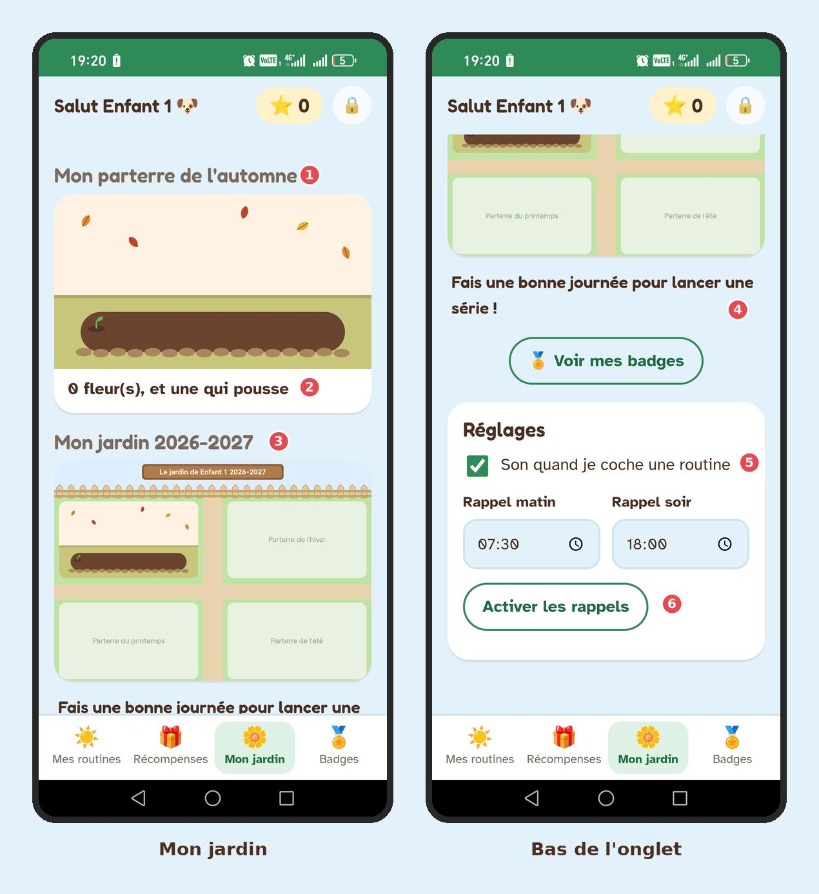
- Parterre de la saison : les fleurs de la saison, une toutes les deux semaines.
- Compteur : fleurs terminées et celle qui pousse.
- Jardin de l'année : quatre parterres, de l'automne à l'été. L'année change au 23 septembre.
- Série : le nombre de bonnes journées d'affilée.
- Son quand l'enfant coche une routine : à couper si besoin.
- Rappels matin et soir : choisir les heures puis Activer les rappels, et accepter les notifications.
| Fleur | Part de bonnes journées sur la quinzaine |
|---|---|
| Une grande fleur | 90 % ou plus |
| Une belle fleur | 65 % ou plus |
| Une petite fleur | 35 % ou plus |
| Un joli bouton | moins de 35 % |
Une bonne journée = au moins 75 % des étoiles prévues du jour validées. Les jours sans routine ou en pause ne comptent ni pour ni contre.
Les badges
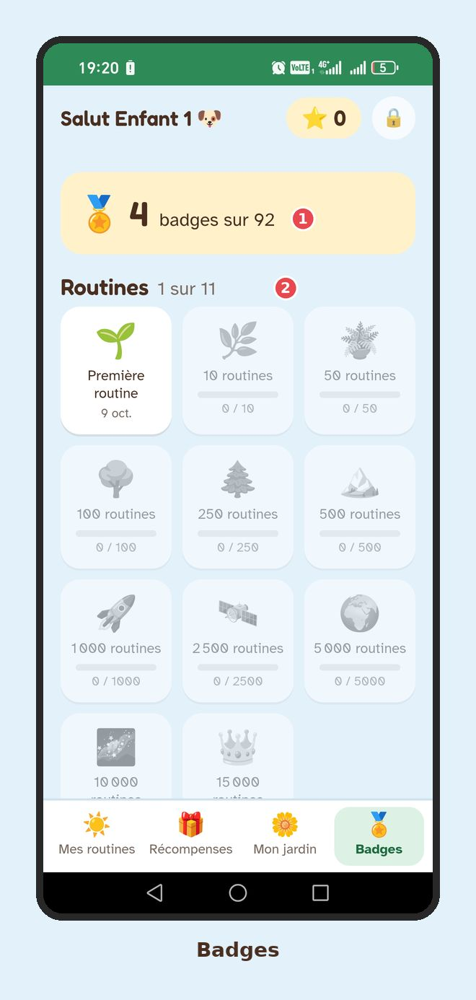
- Total : badges gagnés sur les 92 existants.
- Catégories : chacune affiche son avancement (ici Routines, 1 sur 11).
Un badge gagné est en couleur avec sa date. Les autres sont grisés avec une barre de progression (0 / 10, 0 / 50…). Les paliers vont loin, jusqu'à 15 000 routines, pour durer plusieurs années. Les malus n'enlèvent jamais un badge.
5 Les réglages
Les réglages sont en bas de l'onglet Famille, sous les pauses. Ils sont réservés aux parents. Certains valent pour toute la famille, d'autres seulement pour le téléphone sur lequel tu les règles :
| Réglage | Portée |
|---|---|
| Validation automatique | Toute la famille |
| Rappels | Ce téléphone (chaque parent active les siens) |
| Planning à imprimer | Toute la famille |
| Code parent | Ce téléphone |
| Sauvegarde | Toute la famille |
| Nom de la famille | Toute la famille |
Validation automatique à minuit
Quand l'enfant coche une routine, ses étoiles attendent ta validation. Ce réglage décide de ce qui se passe si personne ne valide dans la journée.
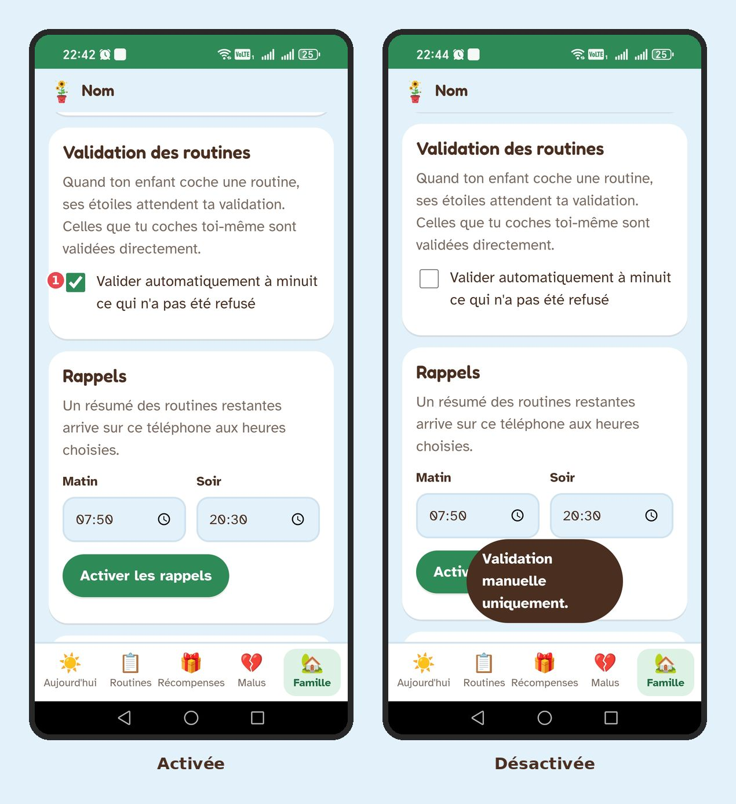
| Case (1) | À minuit, ce qui reste à valider… |
|---|---|
| Cochée (par défaut) | est validé automatiquement. L'enfant n'est pas pénalisé par un oubli des parents. |
| Décochée | reste en attente jusqu'à ta décision. Message : « Validation manuelle uniquement ». |
Dans les deux cas, ce que tu coches toi-même est validé tout de suite. Conseil : garde la case cochée, sauf si tu veux contrôler chaque routine.
Rappels
Aux heures choisies, une notification résume les routines qui restent à faire. Chaque parent les active sur son propre téléphone ; l'enfant a les siens dans Mon jardin (partie 4).
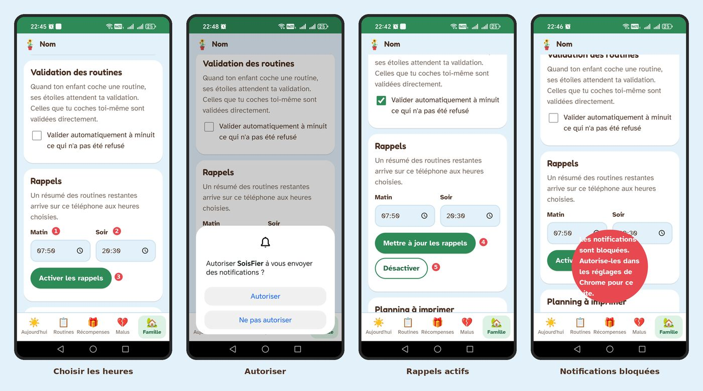
- Matin : l'heure du premier rappel.
- Soir : l'heure du second.
- Activer les rappels, puis Autoriser quand Chrome demande la permission d'envoyer des notifications.
- Mettre à jour les rappels : après avoir changé une heure.
- Désactiver : coupe les rappels sur ce téléphone.
Si tu as répondu « Ne pas autoriser », l'application affiche « Les notifications sont bloquées ». Pour corriger : dans Chrome, touche le cadenas à gauche de l'adresse, puis Autorisations, puis Notifications sur Autoriser. Reviens ensuite sur Activer les rappels.
Planning à imprimer
Pour le frigo ou un enfant sans téléphone : la semaine en cours sur une page A4, à cocher au crayon.
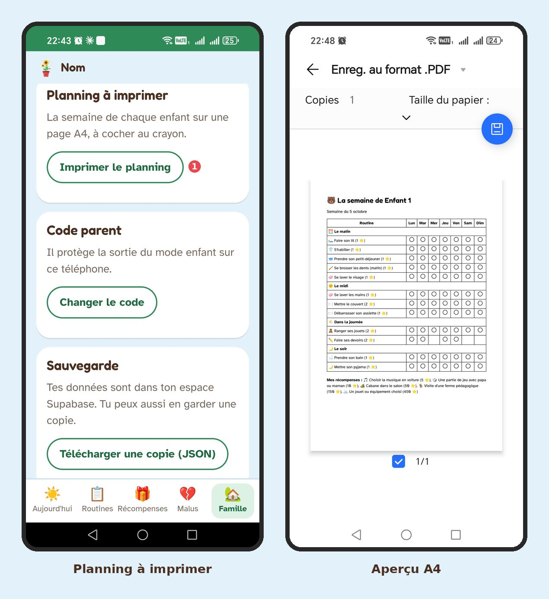
- Touche Imprimer le planning. Avec plusieurs enfants, choisis ceux à imprimer.
- Android ouvre l'aperçu d'impression : choisis ton imprimante, ou Enregistrer au format PDF pour l'envoyer.
La page reprend les routines par moment, un rond par jour prévu (les cases vides sont les jours sans cette routine), et liste les récompenses avec leur prix en bas. Les coches sur papier ne remontent pas dans l'application : il faut les reporter depuis l'écran Aujourd'hui (jusqu'à 6 jours en arrière).
Code parent, sauvegarde et compte
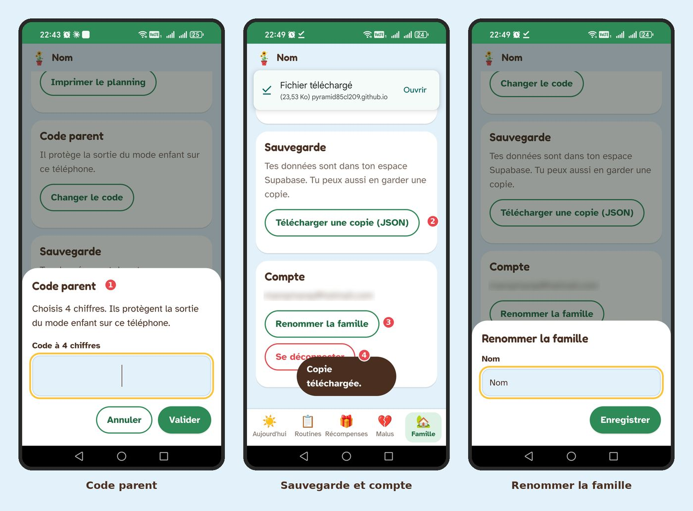
- Code parent : Changer le code, puis 4 chiffres. Il protège la sortie du mode enfant sur ce téléphone (partie 2d). Sans code, l'application pose un petit calcul à la place.
- Télécharger une copie (JSON) : un fichier avec toutes les données de la famille (enfants, routines, étoiles, récompenses, malus, badges, fleurs, pauses), enregistré dans Téléchargements. Utile une fois par trimestre, par précaution.
- Renommer la famille : change le nom affiché en haut de l'application, pour tous les membres.
- Se déconnecter : ferme ton compte sur ce téléphone. Les données restent en ligne ; il suffit de se reconnecter avec son e-mail et son mot de passe.
L'adresse e-mail du compte est rappelée au-dessus des boutons.